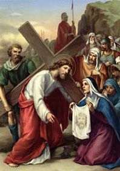

VI. állomás: Veronika letörli Jézus arcát

Veronika nem található az evangéliumokban. Ez a név nem szerepel ott, jóllehet több asszony neve ismert, akik feltűntek Jézus körül. Lehet tehát, hogy a név azt fejezi ki, amit ez az asszony tett. A hagyomány szerint ugyanis a Kálvária felé vezető úton egy asszony utat tört magának a katonák között, akik kísérték Jézust, és egy kendővel letörölte Jézus arcáról az izzadságot és a vért. Ez az arc megmaradt a kendőbe vésve; egy hiteles visszaemlékezés, egy "vera icona", egy igazi képmás. Ez kötődik Veronika nevéhez. Ha pedig ez így van, és gesztusa emlékezetessé teszi ezt az asszonyt, akkor magában foglalja a róla szóló legmélyebb igazságot is. - Egy nap, amikor Jézus környezetéből bírálták, Jézus megvédett egy bűnös asszonyt, aki illatos olajat öntött Jézus lábára és hajával törölte azt. Amikor Jézus észrevette, ezt mondta: "Miért bántjátok ezt az asszonyt? Ő jót tett velem (...). A testemre öntött kenetet temetésemre nézve tette" (Mt 26,10.12). E szavakat lehetne Veronikára is alkalmazni. Így mutatkozik meg az esemény mélységes mondanivalója. A világ megváltója Veronikának ajándékozza arcának egy hiteles másolatát. A kendő, amelyen rajta maradt Krisztus arca, számunkra üzenet. Bizonyos értelemben erre tanít: íme, minden felebaráti jótett, az igazi szeretet minden gesztusa elősegíti a világ megváltójához való hasonlóságot. A szeretet tettei nem múlnak el. A jóság, a megértés, a szolgálat minden gesztusa az ember szívében kitörölhetetlen jegyet hagy, amely mindig hasonlóbbá teszi ahhoz, aki "kiüresítette magát, és szolgai alakot vett föl" (Fil 2,7). Így formálódik azonosságunk, az identitás, az ember igazi neve.
Úr Jézus Krisztus, aki elfogadtad egy asszony önzetlen szeretetének jelét, cserébe pedig megajándékoztad azzal, hogy nemzedékek emlékeznek nevével arcod vonásaira, engedd, hogy jótetteink, s mindazoké, akik majd utánunk fognak jönni, hasonlóvá tegyenek hozzád és gazdagítsák a világot a te végtelen szereteted újabb fölismerésével! Neked Jézus, aki az Atya dicsőségének kisugárzása vagy, tisztelet és dicsőség mindörökkön örökké. Amen.